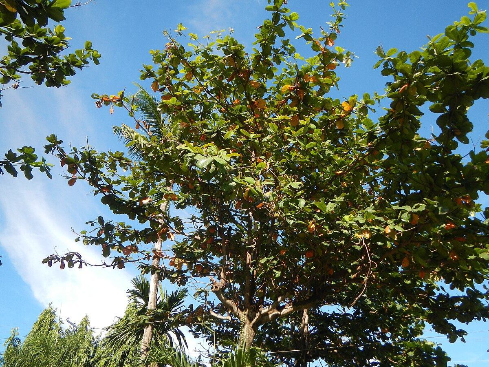

Terminalia catappa — the Tropical Almond, or Sea Almond — is one of the most practical and visually striking trees for coastal and tropical landscape projects. With its distinctive horizontal branching, broad shade, remarkable resilience, and spectacular seasonal colour change, it earns its place in any serious landscape palette.
The Tropical Almond is immediately recognisable by its growth form. Unlike most trees that branch in rounded or irregular patterns, Terminalia catappa grows in clearly defined horizontal tiers — each successive layer of branches spreading outward from the trunk in a geometric, pagoda-like structure. This highly architectural form gives it an elegant, almost designed appearance even without any human intervention.
This tiered branching makes the Tropical Almond particularly appealing to landscape architects who want strong structural interest in a tree. The form reads beautifully from a distance, creates layered shade beneath, and fits naturally into formal or contemporary garden designs as well as naturalistic coastal settings.

One of the most surprising features of the Tropical Almond is its seasonal colour change — unusual for a tropical species. Twice a year, before each leaf drop, the large, glossy leaves turn vivid shades of yellow, orange, and deep crimson. For a brief period, the tree looks more like a temperate autumn landscape than a tropical one.
This dramatic colour display, combined with the tree's normally lush green appearance, gives it genuine year-round visual interest. For resort designers and landscape architects looking to create seasonal moments in tropical projects, the Tropical Almond is an excellent choice.
Where the Tropical Almond truly excels is in coastal and marine environments. It is one of the most salt-tolerant shade trees available, thriving in seaside conditions where most other large trees would struggle or fail. Its root system is also resistant to strong coastal winds, making it a reliable long-term investment in exposed locations.
This combination of salt tolerance, wind resistance, and large spreading canopy makes it the go-to species for:
Beyond its landscape value, the Tropical Almond is ecologically important. Its fruits are consumed by bats, birds, and marine life — fallen fruits in coastal areas are eaten by fish and crabs. The leaves, which contain tannins and flavonoids, are used in traditional Asian aquaculture to condition water for fish breeding. In Thailand and across Southeast Asia, the Tropical Almond is a well-loved community tree, planted along roads, in school grounds, and around temples.
Thailand has extensive natural populations and well-established nursery production of Terminalia catappa. Thai Terra Gardens can supply plants at various stages of development — from young bare-root seedlings for mass planting schemes, to semi-mature specimen trees for immediate landscape impact. All specimens are certified to relevant phytosanitary standards for international export.
Our team can advise on specimen availability, sizing, and logistics for your coastal or beachfront project.
Get in Touch →